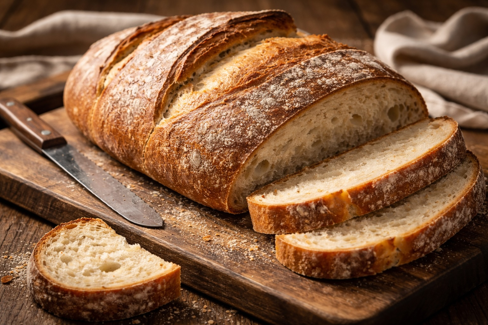

Whole Foods Recipes: Homemade White Bread
Last updated: February 26, 2026

Homemade bread is one of the highest-leverage food skills: simple ingredients, better taste than most store options, and full control over what goes in.
- Simple ingredients, reliable outcome — flour, water, yeast, salt.
- Cooling is part of the recipe — slice too early and you compress the crumb.
- Repeatability beats perfection — one good loaf makes the next one easier.
- You can simplify the process — a single-rise, pan-first method works well for everyday baking.
Purpose
Build a reliable, repeatable loaf using simple ingredients. This recipe is designed to be forgiving, family-friendly, and easy to run again without special equipment.
This recipe prioritizes repeatability and practical execution over perfection, while still allowing refinement when needed.
Total time
About 3–4 hours (mostly hands-off). Active time is ~20 minutes. Cooling time matters for texture.
Ingredients (1 loaf)
- Bread flour (preferred) or all-purpose flour — 3½ cups
- Warm water — 1¼ cups (warm, not hot)
- Yeast — 2¼ tsp (one packet)
- Salt — 1½ tsp
- Sugar or honey — 1 tbsp (optional, helps yeast wake up)
- Olive oil or melted butter — 1 tbsp (optional, softens crumb)
Method
1) Mix and first rise
Combine warm water, yeast, and (optional) sugar. Wait 5–10 minutes until foamy. Add salt, then flour. Mix until a rough dough forms, then knead 8–10 minutes until smoother and elastic.
Cover and let rise in a warm kitchen until doubled (usually 60–90 minutes).
2) Shape and second rise
Gently deflate (or use the simplified method below), shape into a loaf, and place into a greased loaf pan (or shape free-form).
3) Bake
Bake at 375°F for 30–40 minutes. The top should be golden and the loaf should sound hollow when tapped. If the top browns too fast, tent loosely with foil for the last 10 minutes.
4) Cool (don’t skip)
Cool on a rack for at least 45 minutes before slicing. Cutting too early can compress the crumb and make it feel gummy.
Simple vs Refined Method
This recipe can be run in two ways depending on your goal: simplicity or control. Both produce good bread.
Simple method (recommended for repeatability)
For a lower-effort, highly repeatable version:
- After mixing, place the dough directly into a greased loaf pan.
- Let it rise until doubled.
- Lightly press down once with your hand to release large air pockets (5–10 seconds).
- Allow a short final rise (15–30 minutes), then bake.
This approach removes a step while still producing a reliable, family-friendly loaf.
Refined method (more control)
The classic method uses a second rise and shaping step:
- Let dough rise fully, then gently deflate.
- Shape into a loaf to create surface tension.
- Allow a second rise before baking.
This improves crumb consistency and structure, especially if you want more uniform slices.
Practical takeaway: If your goal is simple, repeatable bread, the simplified method works well. Use the refined method when you want more control over texture and structure.
Troubleshooting
- Dough feels too wet: add flour 1 tbsp at a time while kneading (avoid dumping extra flour in quickly).
- Dough feels too dry: add water 1 tsp at a time and knead to incorporate.
- Loaf didn’t rise much: yeast may be old, water may have been too hot/cold, or the kitchen may be cool—extend rise time.
- Dense loaf: under-kneaded or under-proofed. Next time knead a bit longer and let it rise fully.
Storage and serving
Store at room temperature in a bread bag or wrapped in a clean towel for 2–3 days. For longer storage, slice and freeze. Toast straight from frozen.
Favorite simple pairing: warm bread + butter or jam, with hot chocolate or tea.
Family reaction
This recipe was a psychological milestone: baking the first loaf felt intimidating, but it turned out great. My son helped mix and shape, and adding initials gave it personality. The first taste test got an “insanely good” review — which makes the next loaf easier to attempt.
Next steps
Continue with more Whole Food Cooking.
This article focuses on general food quality and cooking with quality ingredients, not medical advice.